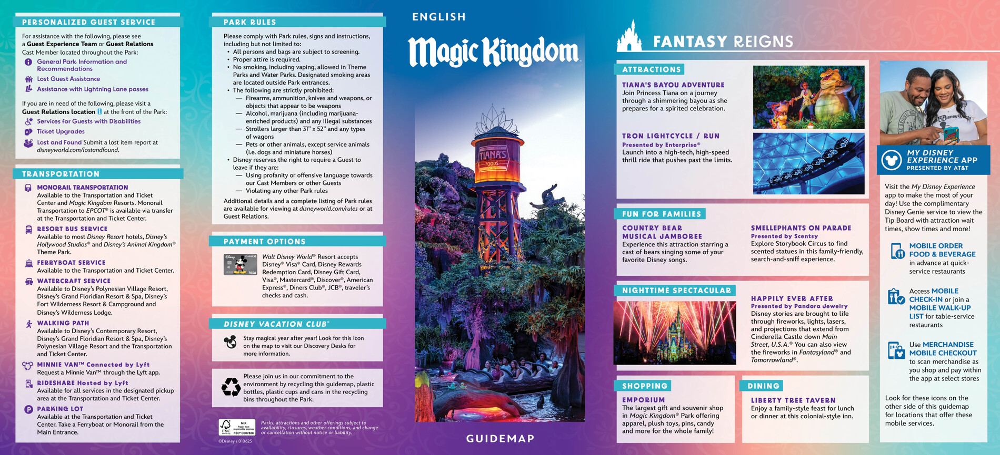

Disney
Magic Kingdom
Jue 23 Apr · Magic Kingdom · Disney's Pop Century Resort
Parque
aprobado
Disney 1-Park-Per-Day
Ritmo: alto
FechaJue 23 Apr
FaseDisney
TipoParque
UbicaciónMagic Kingdom
HotelDisney's Pop Century Resort
TransporteDisney transport
Early Entry08:30 a 09:00
Horario Parque09:00 a 23:00
Lightning Lane Reservadas
Individual9:00-10:00
TRON Lightcycle Run
Multi Pass10:00-11:00
Tiana's Bayou Adventure
Multi Pass11:00-12:00
Pirates of the Caribbean
Multi Pass12:00-13:00
Haunted Mansion
Mapa del parque
Mini mapa para ubicar secciones, atracciones y distancias relativas. Click para ampliar.

Fuente: Disney official park map
Lista de atracciones del parque
- TRON Lightcycle / Run
- Tiana’s Bayou Adventure
- Haunted Mansion
- Pirates of the Caribbean
- Peter Pan’s Flight
- Jungle Cruise
- Space Mountain
- Seven Dwarfs Mine Train
- Big Thunder Mountain Railroad
- Buzz Lightyear’s Space Ranger Spin
- Festival of Fantasy Parade
- Happily Ever After
Prioridades del día
- Cambio aprobado: MK se mueve a jueves
- LLMP: Tiana's Bayou Adventure
- LLMP: Haunted Mansion
- LLMP: Pirates of the Caribbean o Winnie the Pooh
- Evaluar TRON o Seven Dwarfs como Single Pass
Otras atracciones o ideas interesantes
- Early Entry 8:30-9:00 y horario de parque 9:00-23:00
- Sergio remarcó que en MK importa mucho reservar bien temprano el Multi Pass
- Después del bloque inicial, los siguientes objetivos son Peter Pan, Jungle Cruise y Space Mountain
- Mover MK fuera del domingo debería ayudar bastante con la carga de gente
- Festival of Fantasy + Happily Ever After son las anclas de entretenimiento del día
Opcionales si sobra energía
- Castillo y cierre nocturno
- reacomodar Winnie/Pirates según lo que ya haya quedado tomado
- clásicos suaves si necesitan bajar ritmo
Notas completas
Cambio aprobado tras charla con Sergio: mover Magic Kingdom al jueves para evitar hacerlo en domingo. La lógica recomendada es priorizar un muy buen arranque de Multi Pass y después evaluar si TRON o Seven Dwarfs vale más la pena como Single Pass. Horarios oficiales compartidos: Early Entry 8:30-9:00 y parque 9:00-23:00. Anclas del día: Festival of Fantasy Parade + Happily Ever After.